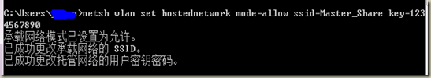

方法一：
1、首先以管理员身份运行命令提示符
开始->搜索框输入cmd，出来的cmd.exe上右键管理员身份运行，或者win+R打开运行提示框，输入cmd并回车。
2、设置“虚拟Wifi网卡”模式
敲入命令：
netsh wlan set hostednetwork mode=allow ssid=Master_Share key=1234567890
其中：
{kind=link}
Mode：是否启用虚拟Wifi网卡，改为disallow则为禁用
Ssid：设定无线网络的名称
Key：设定无线网络的密码。
执行完以后我们会在网络适配器里面看到一个“无线网络连接4“的虚拟网卡（一般情况是无线网络连接2，因为我机器曾接入多块无线网卡故为无线连接4）
{kind=link}
3、启用“Internet连接共享”
打开控制面板找到并打开“网络和共享中心”窗口，右键单击已连接到Internet的网络连接，选择“属性”，切换到“共享”选项卡，选中其中的复选框，并选择允许其共享Internet的网络连接在这里即我们的虚拟Wifi网卡。
{kind=link}
确定之后，提供共享的网卡图标旁边会出现“已共享”标志
在命令提示符中运行以下命令：
netsh wlan start hostednetwork
开启我们之前设置好的无线网络(将start改为stop即可关闭该无线网)。
用你的手机搜索一下无线，找到名称为Master_Share的网络，点击连接并输入你设置的密码，
是否能够上网了呢？
方法二：（推荐）
更酷的玩法：
其实配置无线有更简单方便的方法 
1、首先确保所有的网卡都没有设置Internet连接共享，如果设置过，请取消共享。
打开控制面板->网络和共享中心->设置新的连接或网络
选择“设置无线临时（计算机到计算机）网络”并点击下一步
{kind=link}
出现的窗口中输入你的无线网络名称和密码，注意安全类型选择WEP以方便设置（其实平时也不会总开着无线共享，所以也没必要非要wap2）。
{kind=link}
下一步继续，出现的窗口中选择启用Internet连接共享，（后面还可能让你选择已经接入网络的网卡，请正确选择）
{kind=link}
{kind=link}
成功后无线状态显示为正“等待用户”~~
{kind=link}
用手机搜索一下无线信号，输入正确的密码来使用共享的无线网络。
疑难解答：
如果你前面的步骤不成功。
1、请检查你提供共享的无线网卡（虚拟WIFI或方法二的无线网络2）的IP设置，确保配置如图所示：（DNS可以不用填）
{kind=link}
2、手机或者其他终端如果自动获取的IP跟上面图的IP地址不在一个网段（不是192.168.137.X），请在终端选择手动设置IP，设置如下：
IP地址：192.168.137.2
子网掩码：255.255.255.0
默认网关：192.168.137.1
方法拓展：
其实前面的方法道理都是一样的，都用的是ICS（Internet连接共享）这个服务，所以你可以通过这种方法来实现：
1、无线共享给无线（给手机或平板提供无线连接，毕竟笔记本的网卡比这些终端要好很多）
2、有线共享给无线
3、无线共享给有线（哈哈，这个给力吧，曾经大二的时候就通过这种方法跟同学一起联网上浩方，好怀念！）
好了，其实Windows系统还是很强大的！有任何问题的朋友可以留言共同学习~！